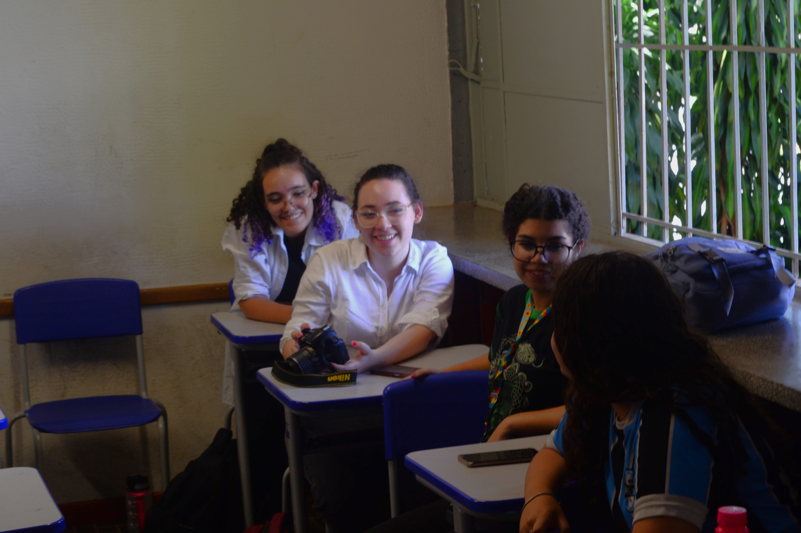

Você está na página oficial do Jornalidade, um projeto que realiza oficinas sobre a atividade jornalística e leva o "mundo das notícias" até os ambientes escolares!
Sobre o projeto
O projeto consiste em um processo de educomunicação, focalizando em estudantes do segundo ano do Ensino Médio da Escola Estadual Professor José Ignácio de Sousa, os quais, assim como a grande maioria dessa faixa etária, estão em constante questionamento de: “o que vou ser na fase adulta?” e “qual caminho seguir?”, como se somente com uma carreira definida sua identidade pudesse ser afirmada. Nesse sentido, o trabalho visa realizar oficinas de jornalismo e, assim, construir experiências junto desses indivíduos, para que possam ampliar seu conhecimento sobre a área, adquirir um maior repertório sociocultural e estimular a própria criatividade, abrindo espaço para a produção de diversos conteúdos jornalísticos de qualidade e para que possam também descobrir mais sobre a personalidade, os gostos e as ambições de cada envolvido.
Faixada da Escola Estadual Professor José Ignácio de Sousa | Foto: Renan dos Santos
Os idealizadores do projeto são todos estudantes de Jornalismo pela Universidade Federal de Uberlândia (UFU):
➤ João Pedro França Peron
➤ Lucas Ribeiro Parreira
➤ Renan Siqueira dos Santos
➤ Sofia dos Reis Clemente Rodrigues
➤ Yasmin Mohamad Ihemayed Alves
E as orientadoras são as professoras da UFU: Christiane Pitanga e Diva Silva.
As oficinas foram feitas junto a nove alunos, sendo eles:
➤ Ana Victória de Freitas
➤ Beatriz da Silva Oliveira
➤ Emanuelly de Oliveira Andrade
➤ Gabrielly Teixeira Santos
➤ Geovana Ketellyn Pereira de Souza
➤ Mariana Ramos Caetano
➤ Mariana Santos Costa
➤ Sofia Bianca Vieira Delfino
➤ Vinicius Del Isola de Souza
A Escola Estadual Professor José Ignácio de Sousa – EEPJIS – 1º e 2º graus foi criada em 1966, com o nome de Colégio Comercial Oficial de Uberlândia, pelo governador do Estado de Minas Gerais, Dr. Israel Pinheiro da Silva, com funcionamento autorizado através da Portaria 48/67 de 14 de abril de 1967, com os cursos de 1º grau e 2º grau e habilitação em Técnico em Contabilidade. [...]
Atualmente são ministrados o Ensino Fundamental e Médio, baseados nos seguintes princípios fundamentais:
Igualdade e condições para o acesso e permanência na escola;
Liberdade de aprender, ensinar, pesquisar e divulgar a cultura, o pensamento, a arte e o saber;
Pluralismo de ideias e concepções pedagógicas;
Respeito à liberdade e apreço à tolerância;
Gestão democrática do ensino público, na forma da Lei e da Legislação dos Sistemas de Ensino.
Fonte: Site oficial da Escola Estadual Professor José Ignácio de Souza (https://pjis.wordpress.com/sobre/)
No ambiente interno, a área de lazer se localiza logo em frente à entrada | Foto: Renan dos Santos
Oficinas
Introdução ao Jornalismo
Na primeira oficina, Lucas Parreira e João Pedro Peron mostraram aos participantes os conceitos básicos da atividade jornalística, como: criação de pauta, redação e revisão da notícia. Também foi explicada a diferença entre interesse público (pautas que tenham impacto na sociedade, temas como vacinação, racismo, homofobia) e interesse do público (o que está em alta e que é colocado como prioridade pela repercussão criada nas redes sociais, por exemplo) como forma de consicentizar sobre o tipo de conteúdo que consumimos e se realmente estamos lendo e ouvindo o que é necessário para nossa própria reflexão acerca de assuntos importantes. Por último, os alunos foram apresentados à estrutura básica do gênero notícia e como montá-la. Os alunos indicaram quais editorias se interessavam mais, sendo elas:
● Cultura Pop
● Opinativo - Criminal
Por fim, foi escolhido conjuntamente que os alunos criassem uma notícia pautada pela editoria escolhida por cada um e esses foram os textos produzidos: Link - Mural Jorn[al]uno
Apresentação das editorias feita por João Pedro | Foto: Renan dos Santos
Rádio e Podcast
Na segunda oficina, Renan dos Santos e Lucas Parreira apresentaram uma introdução ao Rádio e aos famosos Podcasts, que são uma vertente do próprio rádio e cresceram muito, principalmente a partir de 2017. Foi mostrado um pouco da história do rádio no Brasil, focando na criação da rádio Sociedade do Rio, fundada pelo maior difusor do rádio no Brasil, Roquette Pinto (1884-1954), em conjunto com a Academia Brasileira de Letras. Já na área de podcasts, foi explanada a forma como se deu a ascensão desses programas, visto que em 2023, segundo uma pesquisa da Edison Research, nos Estados Unidos (maior produtor e consumidor de podcasts do mundo), cerca de um terço dos americanos com 12 anos ou mais ouvem um podcast mensal. Isso equivale a mais de 100 milhões de pessoas!
Além disso, foram exploradas as etapas de produção no rádio e nos podcasts, bem como a forma de se montar os roteiros para as duas produções sonoras.
E com esse conhecimento obtido, foi pensado em conjunto aos alunos a elaboração de podcasts criados por eles, divididos em duplas ou trios. Com base nas editorias que foram definidas, os alunos desenvolveram o nome, a pauta e o roteiro.
Segue um link com os roteiros dos podcasts: JornaCast - Roteiros
● Roteiros prontos, hora de gravar!
Graças ao Marcelo Melazzo Rodrigues (o qual agradecemos), que organiza os horários da estação de rádio da UFU, localizada na DIRCO (Diretoria de Comunicação Social), foi possível fazer com que a gravação dos podcasts ocorresse nesse local, um ambiente profissional e próprio para a produção de um bom material sonoro. Com o roteiro em mãos, os alunos gravaram seus podcasts.
● PopMania
● Episódio 1 - O impacto da cultura pop na vida das pessoas
No primeiro episódio, Mariana Santos e Emanuelly falaram sobre uma pauta que engloba quase todos os adolescentes de várias gerações. De Beatles até One Direction, a cultura pop segue viva não só na música, mas em vários outros polos, como o cinema e a moda.
Ouça agora o novo episódio do PopMania!
- Créditos:
Roteiro e produção: Mariana Santos e Emanuelly Oliveira
Captação de áudio: Marcelo Melazzo
Edição e publicação: Renan dos Santos
● PopCast
● Episódio 1 - Greve em Hollywood
Mais um podcast focado na cultura pop! Neste primeiro episódio, Beatriz, Gabrielly e Sofia trouxeram informações valiosas sobre um dos assuntos mais falados nos últimos meses: A greve dos roteiristas e atores de Hollywood. Um tema que envolve direitos trabalhistas, manisfestações e até inteligência artificial.
Ouça agora o novo episódio do PopCast!
- Créditos:
Roteiro e produção: Beatriz da Silva Oliveira, Gabrielly Teixeira Santos e Sofia Bianca Vieira Delfino
Captação de áudio: Marcelo Melazzo
Edição e publicação: Renan dos Santos
● VêsePod
● Episódio 1 - O hospital de Barbacena
Você já ouviu falar sobre o Hospital Colônia de Barbacena? Um dos locais mais controversos e sinistros já vistos no Brasil, que é introduzido por Ana Victória e Mariana Ramos. Além de explicar sobre a a história do local, elas mostram que o estigma das pessoas com condições neurológicas ainda está presente em nosso país, com as atrocidades cometidas em Barbacena sendo apenas um reflexo disso.
Ouça agora o novo episódio do VêsePod!
- Créditos:
Roteiro e produção: Ana Victória Oliveira de Freitas e Mariana Ramos Caetano
Captação de áudio: Renan dos Santos
Edição e publicação: Renan dos Santos
Renan dos Santos e Lucas Parreira introduziram a mídia em formato de podcast | Foto: João Pedro Peron
Em breve, foto das gravações
Em breve, foto das gravações
Fotojornalismo
Na terceira oficicina, Renan dos Santos e João Pedro Peron trouxeram os conceitos de Fotografia de modo geral, bem como de Fotojornalismo, especificamente. Foram relacionadas as ideias de Studium (aspecto objetivo de uma foto, o que se vê puramente retratado) e Punctum (aspecto subjetivo de uma foto, a interpretação), criadas pelo francês Roland Barthes (1915-1980), para explicar que uma fotografia em sua essência pode ser qualquer coisa, dependendo da interpretação daquela imagem retratada.
Também foram aprofundados os elementos de exposição (ISO, abertura do diafragma e velocidade do obturador) e as várias formas de composição de uma imagem (enquadramentos, ângulos e planos). Por fim, foi mostrado como isso tudo é aplicado ao jornalismo, principalmente por meio das fotorreportagens, que buscam contar uma história por meio da sequência de imagens.
Alunas aprendendo na prática sobre as configurações de iluminação da câmera | Foto: João Pedro Peron
Como atividade da oficina, com a câmera profissional própria para a atividade fotojornalística e a ajuda dos orientadores, os alunos registraram fotos de diversos ambientes dentro da escola:
Uma bonita mensagem do pintor neerlandês Vincent Van Gogh em meio aos avisos | Foto: Beatriz da Silva Oliveira
"The Wall": o mural com assinaturas e diversas mensagens escritas pelos alunos | Foto: Gabrielly Teixeira Santos
A passarela que leva à parte de trás da escola, local onde muitos alunos passam o intervalo | Foto: Sofia Bianca Vieira Delfino
Vegetação localizada próxima à quadra. A presença de árvores grandes e bonitas chama a atenção | Foto: Mariana Santos Costa
Metalinguagem na fotografia, a famosa "foto da foto" | Foto: Ana Victória Oliveira de Freitas
Velocidade lenta para captar os movimentos | Foto: Mariana Ramos Caetano
Algumas outras fotos das oficinas:
Foto: João Pedro P.
Foto: João Pedro P.
Foto: Lucas P.

Foto: Lucas P.
Foto: João Pedro P.
Entrevistas
● Augusto Silva Garcia
Foto: Arquivo Pessoal - Augusto Silva Garcia
Um educador de 37 anos, dedicado e que traz uma década de experiência no campo do ensino. Sua paixão pela educação o levou a mergulhar em uma jornada profissional marcada por realizações notáveis, incluindo o título de professor de Língua Portuguesa nas seguintes instituições: Escola Estadual Professor José Ignácio de Sousa, Escola Municipal Freitas Azevedo e Escola Municipal Professor Eurico Silva. Além de sua dedicação ao ensino, possui uma pós-graduação em inspeção, supervisão e gestão escolar pela Universidade Federal de Uberlândia (UFU). Seu compromisso com a excelência na educação e sua experiência abrangente fazem dele um entrevistado valioso. Lucas Parreira é o entrevistador que apresenta Augusto Silva Garcia.
Lucas: Obrigado por participar da entrevista, Augusto. Para começar, poderia compartilhar o que o motivou a escolher a carreira de professor? Augusto: Acredito que o que me impulsionou a seguir a carreira de professor foi a minha vontade de compartilhar com entusiasmo aquilo que eu amo. Ter um público interessado em absorver um pouco do meu amor pela literatura e linguagem é o aspecto principal para mim. Acredito que um professor deve, acima de tudo, inspirar. Lucas: Entendo. É fascinante ouvir sobre essa paixão pela transmissão do conhecimento. Agora, em relação aos desafios enfrentados na profissão, você poderia destacar alguns dos principais? Augusto: Certamente. Os principais desafios incluem a falta de valorização financeira e salarial, além da falta de respeito, por vezes, tanto por parte dos alunos quanto, principalmente, por parte dos pais. Às vezes, há uma tendência de enxergar o professor como um inimigo, criando uma dinâmica adversarial. O governo anterior contribuiu para reforçar essa ideia de que a escola é uma inimiga, uma suposta doutrinadora. Além disso, a falta de materiais e recursos adequados também dificulta nosso trabalho. Lucas: Compreendo. Esses desafios certamente destacam as complexidades enfrentadas pelos professores. Em relação ao último ponto que mencionou sobre a falta de materiais e recursos, como isso impacta diretamente no seu trabalho? Augusto: A escassez de materiais e recursos cria obstáculos significativos. Às vezes, é difícil proporcionar uma experiência educacional completa quando não temos acesso aos materiais adequados. Isso não apenas limita a qualidade do ensino, mas também coloca um fardo extra sobre os educadores, que precisam encontrar maneiras criativas de contornar essas limitações para garantir um aprendizado eficaz. Lucas: Gostaríamos de saber mais sobre sua visão em relação à escola. Poderia compartilhar como você enxerga o papel da escola na transmissão de conhecimento? Augusto: Claro, minha perspectiva difere um pouco. Eu não concebo a escola simplesmente como um local de transmissão de conhecimento, mas mais como um ambiente de construção mútua de saberes. Aqui, o aluno desempenha um papel ativo, trazendo suas vivências e leituras para o processo. Acredito que é nessa troca constante que construímos um ambiente propício para a aquisição de conhecimento, o debate, a reflexão, a crítica e a contra-argumentação. Lucas: Me fale sobre o seu conhecimento em relação ao Conceito de Educação e Comunicação. Como você tomou contato com essa área e como a percebe em sua prática educacional? Augusto: O Conceito de Educação e Comunicação é algo relativamente novo para mim. A minha exposição a essa área aconteceu por meio da implementação da disciplina no novo ensino médio. Lembro-me de ter lido sobre isso na época, mas atualmente, não saberia descrever com precisão o que envolve. No entanto, entendo que está relacionado ao uso de ferramentas digitais, impressas e diversas outras para facilitar a educação e o processo de aprendizagem. Vejo isso como um reflexo dos tempos modernos, mas confesso que não consigo detalhar com precisão do que se trata. Lucas: Poderia compartilhar sua perspectiva sobre a ideia de Paulo Freire em relação à educação? Como você percebe a distância entre essa ideia e a realidade educacional? Augusto: Certamente. A perspectiva de Paulo Freire sobre educação destaca a necessidade de uma revisão completa da grade curricular, mas não se limita a isso. Envolve a integração de disciplinas, a promoção da transdisciplinaridade e a participação ativa dos alunos. No entanto, para que isso seja efetivado, é crucial considerar fatores além da grade curricular, como a disponibilidade de material didático adequado, a qualidade da merenda escolar e a abordagem do Estado em relação às necessidades básicas dos alunos. Lucas: Compreendido. Poderia explicar um pouco mais sobre como a participação do aluno, conforme proposta por Paulo Freire, está intrinsecamente ligada a fatores como material didático, qualidade da merenda e a atuação do Estado? Augusto: A participação do aluno proposta por Paulo Freire vai além da sala de aula. Para que os alunos possam realmente participar ativamente do processo educacional, é necessário que eles tenham acesso a material didático adequado, garantindo uma aprendizagem eficaz. Além disso, a qualidade da merenda escolar desempenha um papel fundamental, pois é difícil focar nos estudos quando se está com fome. E, claro, a atuação do Estado é crucial para suprir as necessidades básicas dos alunos, especialmente aqueles que enfrentam situações de pobreza e risco. Lucas: Diante desses desafios, como você enxerga a efetivação das ideias de Paulo Freire na prática educacional, considerando as complexidades socioeconômicas que os alunos podem enfrentar? Augusto: A efetivação das ideias de Paulo Freire enfrenta desafios significativos devido às complexidades socioeconômicas. É difícil implementar uma abordagem participativa quando os alunos enfrentam carências básicas, como fome e falta de suporte familiar. Portanto, para concretizar as propostas de Paulo Freire, é essencial uma abordagem mais abrangente que inclua não apenas a revisão da grade curricular, mas também medidas efetivas para garantir que cada aluno tenha condições adequadas para se envolver ativamente no processo educacional. Lucas: O que você pensa sobre esses projetos extraclasse, como as oficinas de Jornalismo? Acredita que essas oficinas ajudam os alunos em quais aspectos? Augusto: São ótimos projetos que conseguem identificar necessidades, qualidades e interesses individuais dos alunos. Algumas vezes esses projetos podem estimular o aluno a focar em uma carreira, a buscar se aprimorar e valorizar sua autoestima. Lucas: Por fim, como você vê o futuro da educação? Augusto: Infelizmente eu acredito que a ameaça da terceirização e do EAD é grande, mas, se houver um projeto de nação sério, ele deverá incluir, acima de tudo, investimentos e valorização da educação.
● Mariana Ramos Caetano
Em breve | Foto: Sofia dos Reis
Uma estudante de 16 anos, que está no segundo ano do Ensino Médio na Escola Estadual Professor José Ignácio de Sousa. Desde os 13 anos se interessou pela área da comunicação e almeja se profissionalizar nessa área, com as oficinas do projeto Jornalidade sendo uma oportunidade para o início dessa trajetória. O entrevistador João Pedro Peron apresenta Mariana Ramos Caetano.
João Pedro: Mariana, conta pra mim, como é que você começou a se interessar pela comunicação? Mariana: Bom, desde pequena eu acho que nunca tive um foco para isso, mas em 2020, no meio da pandemia, a minha mãe começou a conversar com o meu irmão sobre abrir um negócio e ele era muito empenhado no instagram da loja, que era virtual na época, já que não podia abrir um local físico por causa da pandemia. Ele falava muito sobre marketing e essas coisas. No final de 2021, a minha mãe conseguiu uma lanchonete e a gente continuou no Instagram, até um certo momento em que que eles falaram que eu era boa com isso, foi nesse momento que eu comecei a pensar em fazer coisas relacionadas à comunicação, porque eu queria levar informação do negócio da minha mãe e de coisas que eu acho muito legais de se escutar, que não são muito citadas. Eu queria levar essas informações para as outras pessoas e comecei a ver alguns vídeos de como cuidar de uma página no Instagram, mas não é a mesma coisa. Depois eu me interessei muito pelo Jornalismo, e pensei até em fazer marketing digital e publicidade, para trabalhar mesmo com essa área de comunicação. E quando eu soube das oficinas, pensei que seria uma boa oportunidade de saber mais sobre esse assunto e ver se é realmente o que eu quero. João Pedro: E você acha que irá conseguir utilizar algo que aprendeu nas oficinas fora do âmbito escolar/acadêmico? Mariana: Eu acho que sim, porque com a informação das notícias e tudo mais, a gente pode ensinar outra pessoa a interpretar ou até eu mesma conseguir ver alguns pontos, que antes eu não sabia identificar. Por exemplo, agora eu sei mais detalhadamente sobre foto, meios de comunicação, da importância das fontes. Outro ponto interessante que vocês abordaram na oficina é que o jornalista nunca é imparcial, sempre tem um ponto de vista então às vezes até no site eles falam explicitamente, agora eu vou poder falar que tal parte é a visão do profissional, algo que, acredito eu, muita gente não sabia, pelo menos eu não sabia. João Pedro: E você acha que a forma como a gente fez as oficinas teve impacto nisso? Mariana: Sim, foi muito interativo e conseguiu passar pra gente a mensagem que vocês queriam e nós conseguimos gravar e entender o assunto, eu gostei muito. João Pedro: Existia um educador chamado Paulo Freire, que acreditava que quando você insere o conteúdo na realidade do aluno, com algo que ele tenha mais familiaridade, ele aprende mais fácil. Por exemplo, na oficina de fotojornalismo, ao invés de usarmos imagens e fotógrafos clássicos, preferimos utilizar filmes, que é algo que vocês já têm familiaridade. Como você acha que essa abordagem poderia ser utilizada na sua escola [Estadual Professor José Ignácio de Sousa]? Mariana: Olha, muitos professores meus, como o de português, Augusto, que sempre usa filmes e clipes musicais nas aulas, por exemplo. Inclusive, eu tive um trabalho sobre interpretar clipes musicais, no qual a gente tinha que falar sobre a posição da câmera, sobre a mensagem que a música queria passar e foi muito legal, eu pude falar sobre uma música da Taylor Swift, que desde pequena eu escutava. Então, acho que esse trabalho pegou muito da minha realidade e eu consegui aprender muito sobre a produção de clipes musicais. Além disso, nas aulas de química, eles também utilizam o nosso cotidiano, seja em situações como “fazer um miojo”, o que deixa a aula muito mais interativa. Meus professores sempre tentam ligar o ensino deles com o nosso dia a dia, para a gente ter uma noção melhor do conteúdo, até mesmo colocam a gente em prática, assistindo filmes para debater sobre o assunto. O Augusto já fez vários debates utilizando filmes, sobre vários temas, como “drogas”, “abandono de idoso”, que devem ser pautados entre nós, jovens, e que nem sempre são; Isso, sempre de uma forma interativa, que não pareça um “debate”, e sim uma roda de conversa. João Pedro: Tem um homem chamado Fernando Cássio, ele é doutor em Ciências pela USP e colunista em um portal chamado “Carta Capital”, que é um portal jornalístico mais voltado para pautas políticas. Ele fala que, com base em seus estudos nas escolas públicas de São Paulo [capital], esse novo Ensino Médio aumentou as injustiças que os alunos de escola pública sofrem ao tentarem ingressar na faculdade. Por que você acha que isso ocorre? Mariana: Eu acho que essa fala está certa, porque a respeito de vestibulares, há assuntos muito importantes, que são são muito cobrados e, com esse novo Ensino Médio, nós temos uma redução de carga horária, porque como eu saí de uma pandemia para o novo Ensino Médio, foi um baque para mim, sair de menos de 14 para 21 matérias. Além da pressão de vestibulares que nós sofremos, porque, assim que você pisa no Ensino Médio, eles já começam a falar na sua cabeça, e eu não sabia nada, estava muito atrasada, ainda mais agora que nós temos muitas matérias eletivas, que poderiam ser reduzidas. Porque nas escolas particulares, elas são muito bem estruturadas, já que os alunos têm aula integralmente duas vezes por semana e têm, na parte da tarde, todas as eletivas. Já nas escolas públicas, eles tiveram que aumentar um horário de carga horária e encaixar as eletivas e, com isso, eles tiraram muitas aulas de Física, Biologia, História. Por exemplo, eu tenho agora só uma aula de História e Física por semana, e a matéria eletiva “Mulheres na ciência”, eu tenho duas aulas por semana, e no fim, esta matéria tem muito menos conteúdo do que Física, o que acaba prejudicando a gente, que quer fazer um vestibular ou ENEM. João Pedro: E você acha que, de alguma forma, esse novo Ensino Médio, além dessas injustiças, aumenta a pressão que o aluno tem para escolher uma profissão, supostamente determinante pra vida dele, mais cedo? Mariana: Com certeza, porque os professores falam que nós já temos que saber o rumo que precisamos tomar para termos uma noção do nosso planejamento. A gente, inclusive, tem uma matéria curricular chamada "Projeto de vida", obrigatória em todos os anos do Ensino Médio, que fala do nosso planejamento. Mas, mesmo assim a gente sofre para saber qual área nós queremos, já que não é possível nos aprofundarmos muito sobre as profissões que nos interessamos, e quem nem sabe ainda a área que pretende seguir acaba ficando para trás. João Pedro: E muitas vezes as pessoas acham que se você escolher determinada profissão, terá que trabalhar com isso pelo resto da sua vida, o que não tem nada a ver. Mariana: Exatamente, nada a ver. João Pedro: Após essas oficinas, você acha que a forma como você consome mídia, seja jornalística ou não, mudou? Mariana: Sim, pois agora eu consigo diferenciar, por exemplo, o interesse público do “interesse do público”, toda a estrutura da notícia, como as perguntas que devem estar no lead [ou lide], o título. O que eu acho muito interessante nós sabermos, até para repassarmos para as outras pessoas. João Pedro: Muito obrigado pela entrevista, Mariana. Mariana: Muito obrigada.
Contato
Gostou do projeto? Tem alguma dúvida? Estes são os meios pelos quais podemos ser contactados: